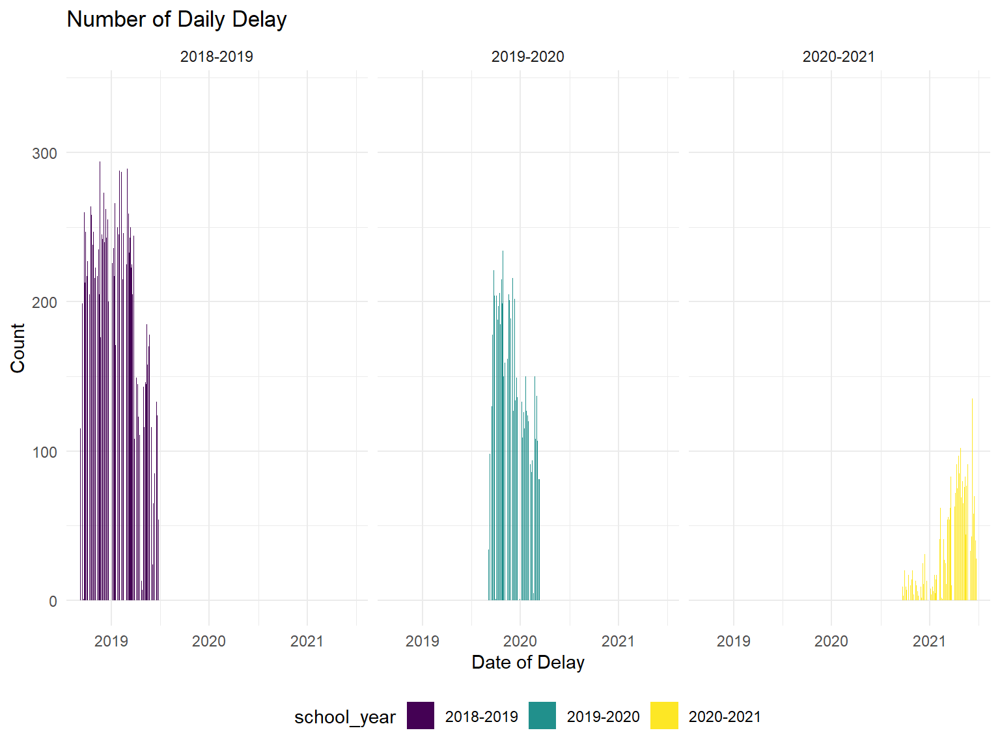
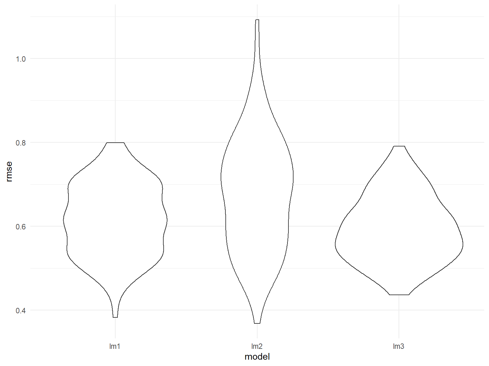

From previously data exploration and data analysis, we know that there exists some interesting relationship between bus delay and weather,location, and a variety of reasons.Here, we want to explore the dataset more deeper to predict the number of daily delay in Manhattan as our outcome and month, weekday, reasons,daily precipitation,run type of bus, daily snow depth as predictors.
Our interested dependent variable is number of delay across three school years: the amount of delay in Manhattan. We can interpret that this dependent is following poison distribution, so we need to consider regression model for this settings. Based on the graph below, the daily delay across three consecutive school have declined.
daily_df = df %>%
filter(school_year!="2021-2022",
boro =="Manhattan") %>%
group_by(occur_date,school_year) %>%
summarize(n=n()) %>%
ggplot(aes(x=occur_date, y=n,fill=school_year))+
geom_bar(stat='identity')+
facet_grid(~school_year)+
labs(
title = "Number of Daily Delay",
x = "Date of Delay",
y = "Count"
)
daily_df
Here’s the predictors in our model:
·month: month of the incident occurred;
·day: weekday of the incident occurred;
·reason : reason for delay as entered by staff employed by reporting bus vendor;
·prcp:precipitation (tenths of mm)
·run_type:designates whether a breakdown or delay occurred on a specific category of busing service;
·snwd: snow depth (mm)
·tmin Minimum temperature (tenths of degrees C)
We propose 4 models for prediction:
1. Linear Model of daily_delay ~ month + day + snwd + tmin
2. Linear Model of daily_delay ~ month + day + snwd + tmin+ tmin*day,assuming that there are interaction
3. Linear Model of daily_delay ~ month + day + prcp
4. Step_wise Regression Model of daily_delay ~ month + day + prcp + snwd+ tmin
cv_df=df %>%
sample_n(size = 100) %>%
group_by(occur_date) %>%
mutate(daily_delay=n()) %>%
modelr::crossv_mc(n = 100) %>%
mutate_if(is.character, as.factor) %>%
mutate(train = map(train, as.tibble),
test = map(test, as.tibble)) %>%
mutate(lm_1 = map(.x = train,~ lm(daily_delay ~ month + day + snwd + tmin,data = .x)),
lm_2 =map(.x = train,~ lm(daily_delay ~ month + day+ snwd + tmin+tmin*day,data = .x)),
lm_3 =map(.x = train,~ lm(daily_delay ~ month + day+ prcp, data = .x)))cv=cv_df %>%
select(starts_with("lm")) %>%
pivot_longer(
starts_with("lm"),
names_to = "model",
values_to = "data") %>%
mutate(data = map(data,broom::tidy))
cv %>%
filter(model == "lm_1") %>%
unnest(data) ## # A tibble: 1,600 × 6
## model term estimate std.error statistic p.value
## <chr> <chr> <dbl> <dbl> <dbl> <dbl>
## 1 lm_1 (Intercept) 1.91 0.286 6.70 0.00000000674
## 2 lm_1 monthDecember -0.327 0.294 -1.11 0.271
## 3 lm_1 monthFebruary 0.162 0.285 0.568 0.572
## 4 lm_1 monthJanuary -0.341 0.367 -0.930 0.356
## 5 lm_1 monthJune -0.455 0.422 -1.08 0.286
## 6 lm_1 monthMarch 0.0664 0.313 0.212 0.833
## 7 lm_1 monthMay -0.0378 0.347 -0.109 0.914
## 8 lm_1 monthNovember -0.331 0.280 -1.18 0.241
## 9 lm_1 monthOctober -0.554 0.305 -1.82 0.0738
## 10 lm_1 monthSeptember -0.452 0.409 -1.10 0.274
## # … with 1,590 more rowscv %>%
filter(model == "lm_2") %>%
unnest(data) ## # A tibble: 2,000 × 6
## model term estimate std.error statistic p.value
## <chr> <chr> <dbl> <dbl> <dbl> <dbl>
## 1 lm_2 (Intercept) 2.42 0.288 8.41 1.11e-11
## 2 lm_2 monthDecember -0.574 0.276 -2.08 4.21e- 2
## 3 lm_2 monthFebruary 0.183 0.269 0.681 4.98e- 1
## 4 lm_2 monthJanuary -0.584 0.348 -1.68 9.89e- 2
## 5 lm_2 monthJune 0.0698 0.439 0.159 8.74e- 1
## 6 lm_2 monthMarch -0.231 0.298 -0.776 4.41e- 1
## 7 lm_2 monthMay 0.294 0.347 0.849 3.99e- 1
## 8 lm_2 monthNovember -0.407 0.263 -1.55 1.26e- 1
## 9 lm_2 monthOctober -0.340 0.288 -1.18 2.42e- 1
## 10 lm_2 monthSeptember -0.106 0.390 -0.273 7.86e- 1
## # … with 1,990 more rowscv %>%
filter(model == "lm_3") %>%
unnest(data) ## # A tibble: 1,500 × 6
## model term estimate std.error statistic p.value
## <chr> <chr> <dbl> <dbl> <dbl> <dbl>
## 1 lm_3 (Intercept) 1.77 0.264 6.71 0.00000000588
## 2 lm_3 monthDecember -0.109 0.284 -0.384 0.702
## 3 lm_3 monthFebruary 0.185 0.271 0.682 0.498
## 4 lm_3 monthJanuary -0.225 0.335 -0.672 0.504
## 5 lm_3 monthJune -0.382 0.368 -1.04 0.303
## 6 lm_3 monthMarch 0.132 0.289 0.457 0.649
## 7 lm_3 monthMay -0.0251 0.313 -0.0800 0.936
## 8 lm_3 monthNovember -0.303 0.273 -1.11 0.271
## 9 lm_3 monthOctober -0.523 0.290 -1.80 0.0762
## 10 lm_3 monthSeptember -0.306 0.375 -0.815 0.418
## # … with 1,490 more rowsdf_1=df %>%
group_by(occur_date) %>%
mutate(daily_delay=n()) %>%
ungroup(occur_date) %>%
select(everything())
multi.fit=lm(daily_delay~month + day + prcp + snwd+ tmin, data=df_1)
summary(multi.fit)##
## Call:
## lm(formula = daily_delay ~ month + day + prcp + snwd + tmin,
## data = df_1)
##
## Residuals:
## Min 1Q Median 3Q Max
## -233.7 -35.9 12.4 40.3 119.0
##
## Coefficients:
## Estimate Std. Error t value Pr(>|t|)
## (Intercept) 130.34001 1.14697 113.64 < 2e-16 ***
## monthDecember 71.37443 1.26607 56.37 < 2e-16 ***
## monthFebruary 69.92198 1.28330 54.49 < 2e-16 ***
## monthJanuary 56.46312 1.27061 44.44 < 2e-16 ***
## monthJune 30.12089 1.53009 19.69 < 2e-16 ***
## monthMarch 53.09433 1.24254 42.73 < 2e-16 ***
## monthMay 38.68639 1.30074 29.74 < 2e-16 ***
## monthNovember 92.51235 1.17221 78.92 < 2e-16 ***
## monthOctober 111.17046 1.15440 96.30 < 2e-16 ***
## monthSeptember 106.57404 1.32609 80.37 < 2e-16 ***
## dayMonday 15.53969 0.75741 20.52 < 2e-16 ***
## dayThursday 2.61401 0.74148 3.53 0.00042 ***
## dayTuesday 8.56736 0.74749 11.46 < 2e-16 ***
## dayWednesday 5.68897 0.74309 7.66 1.9e-14 ***
## prcp 0.07600 0.00296 25.71 < 2e-16 ***
## snwd -0.51022 0.01150 -44.38 < 2e-16 ***
## tmin -3.65887 0.05667 -64.56 < 2e-16 ***
## ---
## Signif. codes: 0 '***' 0.001 '**' 0.01 '*' 0.05 '.' 0.1 ' ' 1
##
## Residual standard error: 58.7 on 62221 degrees of freedom
## Multiple R-squared: 0.306, Adjusted R-squared: 0.306
## F-statistic: 1.71e+03 on 16 and 62221 DF, p-value: <2e-16step(multi.fit, direction='both')## Start: AIC=506860
## daily_delay ~ month + day + prcp + snwd + tmin
##
## Df Sum of Sq RSS AIC
## <none> 2.14e+08 506860
## - day 4 1726245 2.16e+08 507352
## - prcp 1 2274764 2.16e+08 507516
## - snwd 1 6778341 2.21e+08 508798
## - tmin 1 14345529 2.28e+08 510894
## - month 9 57893188 2.72e+08 521736##
## Call:
## lm(formula = daily_delay ~ month + day + prcp + snwd + tmin,
## data = df_1)
##
## Coefficients:
## (Intercept) monthDecember monthFebruary monthJanuary monthJune
## 130.340 71.374 69.922 56.463 30.121
## monthMarch monthMay monthNovember monthOctober monthSeptember
## 53.094 38.686 92.512 111.170 106.574
## dayMonday dayThursday dayTuesday dayWednesday prcp
## 15.540 2.614 8.567 5.689 0.076
## snwd tmin
## -0.510 -3.659Predictors we chose above are statistically significant.However,we notice that interaction terms are not contributing to model predictability.We would say lm_1 and lm_3 might be a bit better than lm-2.
cv_df %>%
mutate(
rmse_lm1 = map2_dbl(lm_1, test, ~rmse(model = .x, data = .y)),
rmse_lm2 = map2_dbl(lm_2, test, ~rmse(model = .x, data = .y)),
rmse_lm3 = map2_dbl(lm_3, test, ~rmse(model = .x, data = .y))) %>%
select(starts_with("rmse")) %>%
pivot_longer(
everything(),
names_to = "model",
values_to = "rmse",
names_prefix = "rmse_") %>%
mutate(model = fct_inorder(model)) %>%
ggplot(aes(x = model, y = rmse)) + geom_violin()
Month,rainfall,snow depth, and day are good predictors for anticipating the number of daily delay in Manhattan.